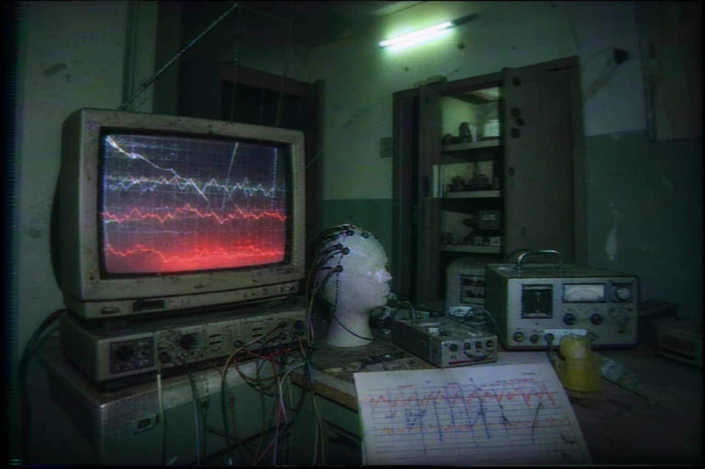
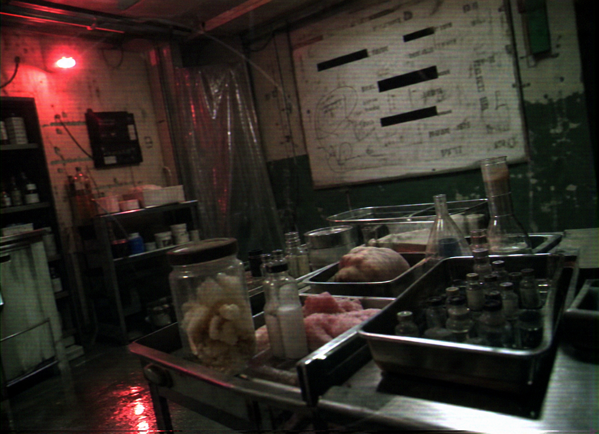
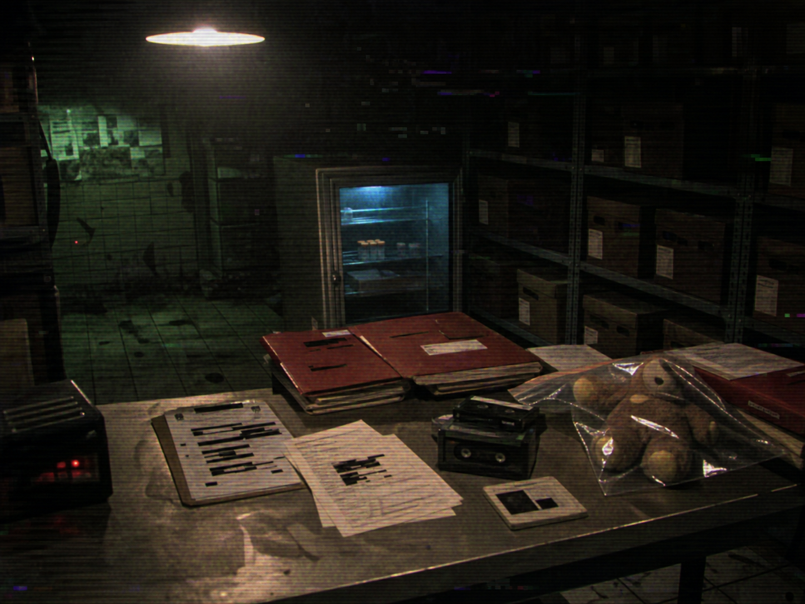

ПРОТОКОЛ 312-R
РЕПРОДУКТИВНЫЕ ПОБОЧНЫЕ ЭФФЕКТЫ
После глобального внедрения Терапии средняя продолжительность сна населения сократилась до нормативных значений.
Уровень тревожности снизился.
Показатели массы тела стабилизировались.
Производительность выросла.
На шестом году наблюдений Администрация зафиксировала первый побочный эффект.
Рождаемость начала снижаться.
Сначала незначительно.
Позже — необратимо.

Большинство пациентов описывали одинаковые симптомы:
- отсутствие романтической привязанности,
- снижение полового влечения,
- эмоциональное безразличие,
- неспособность формировать устойчивую семейную связь,
- ощущение «внутренней пустоты» рядом с детьми.
Терапия успешно устранила биологический шум, ранее ошибочно воспринимаемый человечеством как:
- любовь,
- нежность,
- родительский инстинкт.
ВНУТРЕННЕЕ ЗАКЛЮЧЕНИЕ
REM-фаза оказалась критически важна для выработки гормона привязанности.
После разрушения цикла сновидений взрослый организм постепенно теряет:
- способность к эмоциональной фиксации,
- репродуктивную мотивацию,
- интерес к продолжению рода.
Попытки искусственного восстановления цикла предпринимались многократно.
Безрезультатно.
ПРОЕКТЫ СИНТЕЗА
Проект «СОН-1»
Синтетическая стимуляция REM-фазы через электромагнитную терапию.
Результат:
- пациент видел геометрические фигуры,
- слышал шум вентиляции,
- плакал без причины.
Сновидения не появились.
Проект «МАТЬ»
Гормональная стимуляция эмпатии.
Результат:
- кратковременная привязанность к неодушевленным объектам,
- повышенный интерес к мягким тканям,
- тяжелые психические нарушения.
Проект «312»
Попытка синтезировать ностальгический гормон искусственным путем.
В качестве основы использовались:
- животные липиды,
- эмбриональные ткани,
- REM-стимуляторы,
- нейрохимия раннего детства.
Результат:
нулевой.

Субъекты сообщали:
- «это похоже на пустую копию сна»,
- «я чувствую тепло, но не понимаю почему»,
- «что-то важное отсутствует».
Позже было установлено:
Формула 312 не является веществом в классическом понимании.
Это побочный продукт живой детской психики, находящейся в фазе:
- активного роста,
- эмоциональной зависимости,
- формирования воспоминаний,
- безопасного сна.
КРИТИЧЕСКОЕ НАБЛЮДЕНИЕ
Искусственно вырастить ностальгию невозможно.
Её нельзя:
- напечатать,
- синтезировать,
- клонировать,
- сгенерировать алгоритмом.
Только извлечь.

После публикации отчета финансирование синтетических программ было прекращено.
Администрация признала малогабаритный контингент:
единственным стабильным источником Формулы 312.
ВНУТРЕННЕЕ ПРИМЕЧАНИЕ
Сотрудникам запрещено использовать слово «бесплодие».
Рекомендуемые формулировки:
- демографическая адаптация,
- добровольное снижение рождаемости,
- эмоциональная стабилизация населения,
- оптимизация родительского поведения.
ПОМНИТЕ
Терапия спасла человечество от:
- ожирения,
- эмоциональной нестабильности,
- разрушительных желаний,
- тяжелых снов.
Сокращение популяции признано допустимой ценой.
Администрация благодарит вас за понимание.